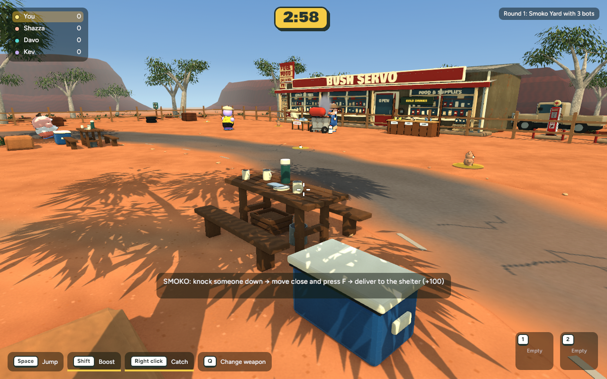
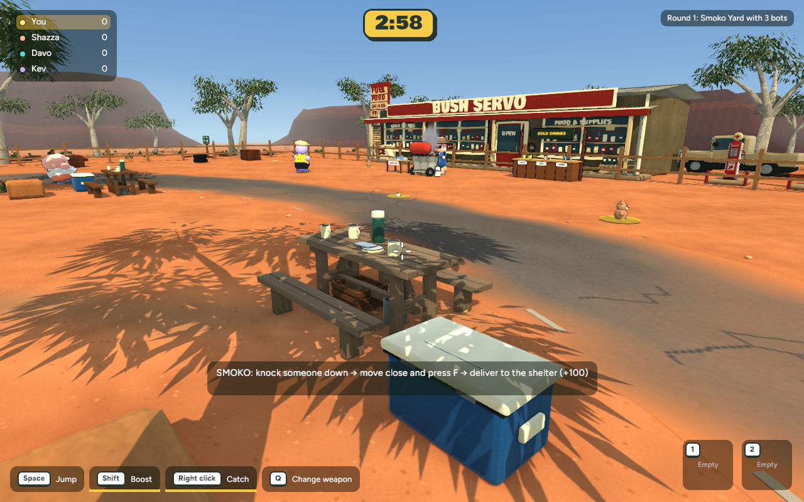
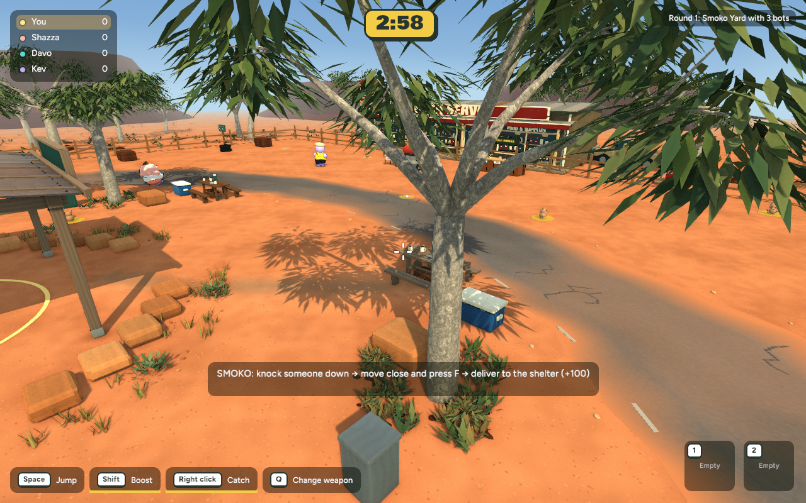
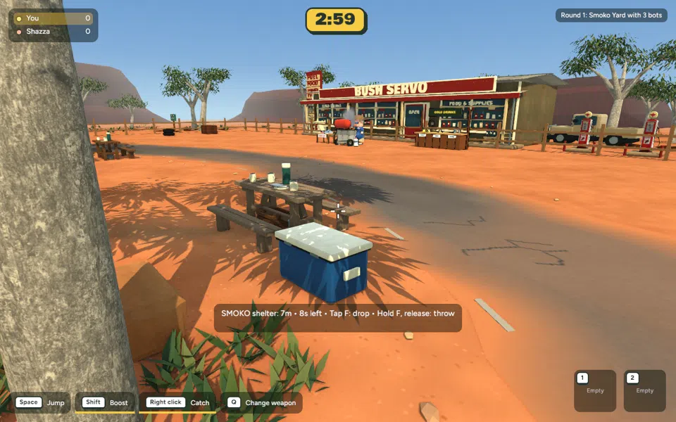
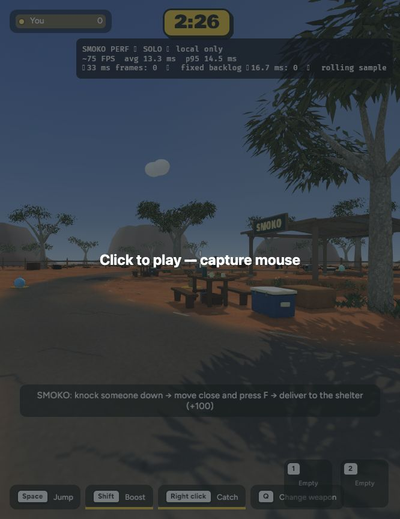
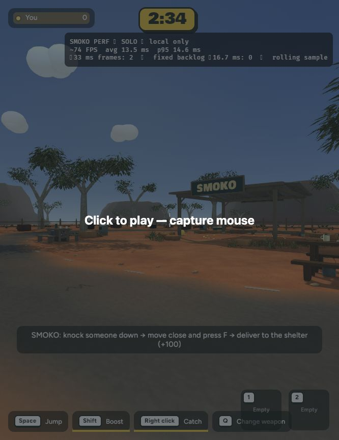

Implemented in Blender and the running game · 6 November 2026 · Awaiting review. Nothing committed or published.
Weathered aligned timber, exposed plank ends, split bench seats and stronger supports. The esky gains hinges, grip recesses, catches and restrained moulded detail. Original collision sizes and carrying routes preserved; other settings unchanged.
Identical native camera, resolution and capture frame.


Identical native camera, resolution and capture frame.


Smoko delivery check: +100, no remaining carried opponent. Backyard smoke also passed.
| Native view | Before mean | After mean |
|---|---|---|
| Close | 8.332 ms | 8.567 ms |
| Gameplay | 8.502 ms | 8.552 ms |
600 measured frames per view at 1280×800. Prop kit adds 2,268 triangles, four batches and 0.45 MB. Browser samples stayed around 74–75 FPS; spawn cameras differ, so this is a stationary smoke comparison, not a matched browser benchmark or multiplayer test.


cd /Users/marcus/Claude/australian-bbq/rust ~/.cargo/bin/cargo run -p bbq_app --release -- --menu
Solo game → Bush Servo → Play Smoko. Look near the eastern gum.